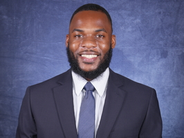

About Me

I utilize positive habits of thought and action every day, every hour to improve my life and others around me. My value driven attitude helps employers solve problems at an accelerated rate. By amplifying my degree of failure I became proficient at time management, ability to learn, communication, and business strategies. I received a Bachelors of Arts in Economics from the University of Texas at Austin in the spring of 2016 and completed a coding bootcamp from The University of Texas in the fall of 2018.
July 25th of 2017 I founded a company called Secure Capital LLC, that specialized in automated teller machine sales and repairs. Along this journey of entrepreneurship and apprenticeship I acquired skills in agile methodology, leadership, and taking risk. My core values and history has conditioned me to become one of the best web developers by connecting good attributes with compounding interest.